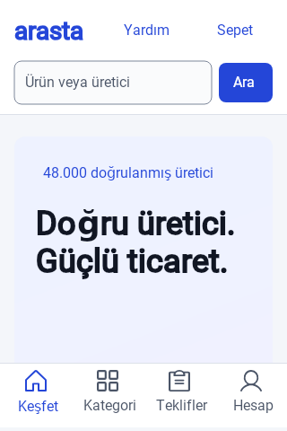
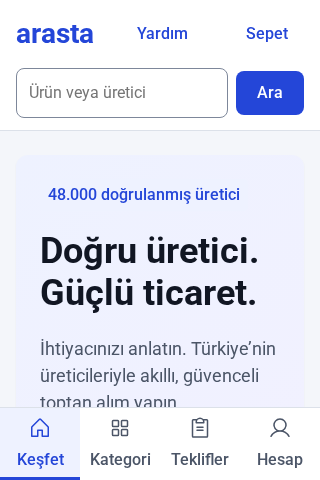
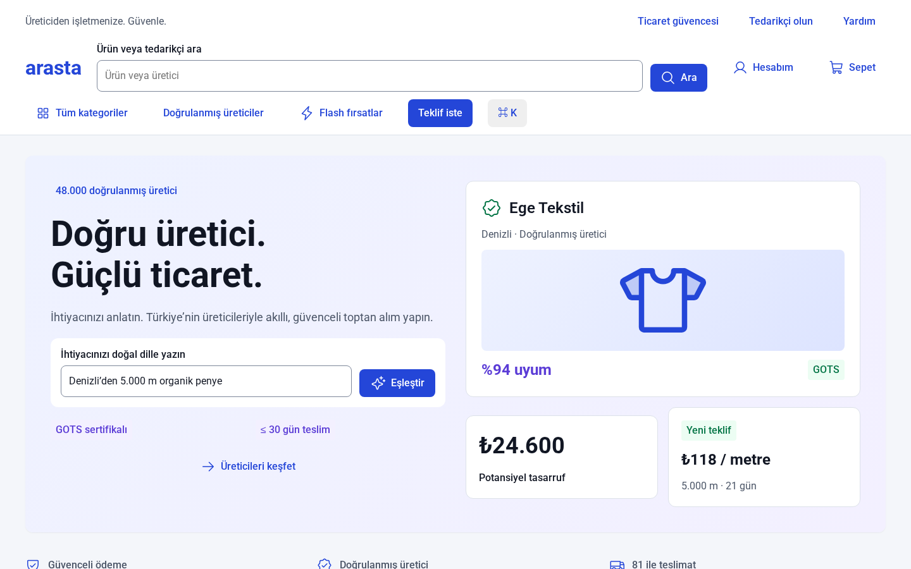
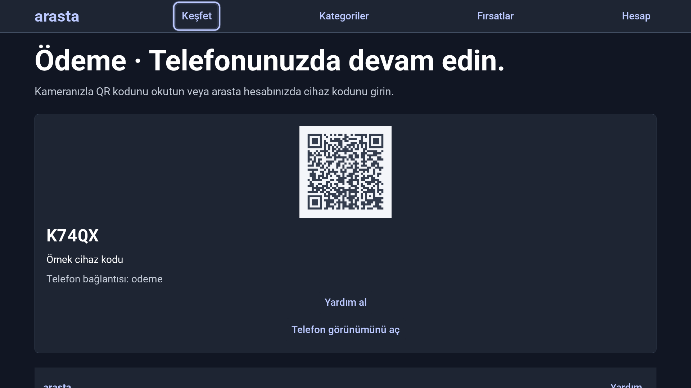

Yerel üretim
22 sayfa × 22 cihaz = 484 frame; 1.680 reusable master, 8.542 ref ve 149 değişken yerel MCP ile yazıldı. Phosphor çizimleri path düğümleri; fotoğraf, SVG/HTML tasarım içe aktarımı yok.
Kanıt: design/arasta.op; generator-state.jsonarasta, ZSeven OpenPencil MCP içinde hazırlanmış bir Türkçe B2B pazar yeri tasarımı ve etkileşimli statik prototiptir. Referans yalnızca karşılaştırma amacıyla incelendi; dosyası, kodu veya görseli alınmadı.
623 kayıtlı native çağrı · %98.23 başarı · p50 399.27 ms · p95 1623.81 ms. Bu gecikmeler batch çağrısı içindir; tek ekran gecikmesi değildir.
50 sayfalık axe taramasında 0 ihlal. Semantik token çiftleriyle hesaplanan en düşük metin kontrastı 5,056:1. Otomatik testler tüm WCAG şartlarının insan değerlendirmesinin yerine geçmez.
22 sayfa × 22 cihaz = 484 frame; 1.680 reusable master, 8.542 ref ve 149 değişken yerel MCP ile yazıldı. Phosphor çizimleri path düğümleri; fotoğraf, SVG/HTML tasarım içe aktarımı yok.
Kanıt: design/arasta.op; generator-state.jsonÜretim ve Chromium testleri Colima factory içindeki Linux konteynerlerinde yapıldı. Masaüstü uygulamasına son iş akışında müdahale edilmedi.
Kanıt: calls.jsonl; browser/results.json155 ProductCard master’ının dikey aralığı 12 → 16 px değiştirildi. 976 doğrudan ref, kendi gap override’ı olmadan yeni değeri kullanıyor.
Kanıt: master-round3.json484/484 ekran gerçek CSS genişliğinde açıldı: HTTP 200, yatay taşma yok, 16 px altı metin yok, 12 px üstü radius yok, etiketsiz kontrol yok, tek h1. 17 etkileşim testi geçti.
Kanıt: browser/results.json; browser/interactions.json320 ve 1440 genişliğindeki 22’şer sayfa ile 6 TV sayfasında axe WCAG A/AA kuralları: 50 sayfada 0 ihlal. 484 yerel ağaçta semantik metin renklerinin en düşük kontrastı 5,056:1.
Kanıt: browser/axe.json; token-contrast.jsonGiriş, ödeme, teklif, kayıt ve mesajlar ekranlarındaki 5 QR gerçek hedef URL’ye çözüldü. K74QX bir örnek cihaz kodudur; canlı oturum eşleştirmesi değildir.
Kanıt: browser/axe.jsonReusable master/ref bağlantıları çalışıyor. Durumlar ayrı adlandırılmış master’lardır. list_components bu runtime’da 0 döndürdü; yerel varyant eksenleri/paneli doğrulanmış kabul edilmedi.
Kanıt: capabilities-isolated.json; calls.jsonlMaster’ın kütüphane x/y konumu instance’a miras kaldı. x/y=0 ref’leri üst üste bindirdi; U(x:null) koordinatı kaldırmadı. Master’lar koordinatsız yeniden üretildi, kütüphane konumu dış kapsayıcıya taşındı.
Kanıt: browser-round1-sample.json; calls.jsonlWeb runtime’ındaki spawn_agents çağrısı 180 saniyede istemci zaman aşımına ulaştı ve servis yoğun kaldı. Kaydedilmiş .op ile ayrı headless süreçte devam edildi; web servisi dosya korunarak geri yüklendi. Headless denemesi yapılandırılmış config argümanını -32602 ile reddetti. Gerçek paralel agent üretimi ve hızlanma ölçülmedi.
Kanıt: calls.jsonl; capabilities-isolated.jsoncodegen_plan/submit/assemble hattı, dışarıdan verilen React parçasını doğrulayıp paketledi. Eksik parça doğru hata verdi; başarılı assemble planı tüketti. AI modeli bağlı olmadığı için otonom React/HTML üretimi ve otomatik export görsel sadakati ölçülemedi. Frontend, kaydedilmiş native ağacın deterministik HTML adaptörüdür.
Kanıt: capabilities-isolated.json; web/tools/export_frontend.py320 px native render ile frontend incelendi. Native metin ölçümü, hug/fill ve flex davranışında farklar var; HTML adaptörü min-width, sarma, semantik etiketler ve kaydırmayı ayrıca uygular. Piksel düzeyinde 1:1 eşitlik iddia edilmez.
Kanıt: native-final-320.png; browser/mobil-dikey-320.pngYerel ZSeven Git branch/merge arayüzü bu web/headless API’de sunulmuyor. Harici git merge-file testinde ayrı alanlar geçerli JSON olarak birleşti; aynı alan çakışması conflict marker üretti. Bu, yerel Git özelliği testi değildir.
Kanıt: git-merge.jsonGüncel paketlerde Roboto ve Roboto Mono lisansı SIL OFL 1.1; briefteki Apache-2.0 ifadesi bu dosyalara uygulanamaz. Gerçek lisanslar aynen saklandı. AI, kimlik doğrulama, mesajlaşma ve ödeme backend’i bağlı değildir; etkileşimler yerel örnek akışlardır.
Kanıt: web/assets/Roboto-LICENSE.txt; web/assets/RobotoMono-LICENSE.txtLog, enstrümantasyon başladıktan sonraki native MCP çağrılarını içerir; ilk keşif/önceki GUI denemelerinin eksiksiz kaydı değildir. p50/p95 çağrı bazındadır; batch başına en çok 3 ekran olduğundan tek frame gecikmesi diye sunulmaz. 100 KB sınırı ve 120 saniye iptal davranışı doğrudan eşik testiyle ölçülmedi.
Kanıt: metrics.json; calls.jsonl



Penpot sütunu briefteki bulguları ve referansın gözlemini kullanır. Eş donanımda yeni bir Penpot benchmark’ı değildir.
| Boyut | Penpot referansı | ZSeven bu çalışma |
|---|---|---|
| Kurulum | Referans yayını mevcut; yeniden kurulmadı. | UYUM · Çalışan v0.8.2 + ayrı Linux worker. |
| Bağlantı | Penpot + MCP; bu turda yeniden ölçülmedi. | UYUM · HTTP MCP ve op CLI. |
| Başsız çalışma | Briefte arka plan heartbeat riski bildirilmiş. | UYUM/KISMİ · GUI olmadan üretim; Teams çağrısı takıldı. |
| Dosya biçimi | Sunucu tabanlı Penpot belgesi. | UYUM · Yaklaşık 20 MB, okunabilir .op JSON. |
| Ölçek | Aynı 484 ekran hedefi; eş zamanlı benchmark yok. | UYUM · 484 frame, 30.141 kayıtlı düğüm. |
| Token API | Kütüphane renkleri ve cihaz temaları. | UYUM · 149 değişken, Light/Dark + 8 Cihaz teması. |
| Master bağlantıları | Referans bileşen yaklaşımı. | UYUM · 976 ref üzerinde master değişikliği doğrulandı. |
| Varyantlar | Briefte grup başına tek varyant listeleme sorunu. | KISMİ · Adlandırılmış durum master’ları; registry 0. |
| Auto layout | Briefte hug/fill ve resize sıfırlama sorunları. | DİRENÇ · x/y mirası ve null patch davranışı. |
| Font çözümü | Briefte fuzzy font lookup riski. | KISMİ · Roboto ismi native; web kendi WOFF2 dosyalarını kullanır. |
| Vektör/ikon | Karşılaştırma için kopyalanmadı. | UYUM · 80 UI ikon × 4 boyut; Phosphor native path. |
| İstek boyutu | Briefte 100 KB sınırı. | KISMİ · En büyük gözlenen istek 61737 bayt; sınır bulunmadı. |
| Timeout/iptal | Briefte 120 saniye ve iptal yokluğu. | DİRENÇ · Teams için 180 saniye istemci timeout; yerel iptal aracı yok. |
| Yazma gecikmesi | Eş donanımda ölçülmedi. | ÖLÇÜM · Çağrı p50 399.27 ms; p95 1623.81 ms. |
| Hata kalitesi | Briefte farklı direnç örnekleri. | KISMİ · Ayrıntılı patch hataları; bazı null işlemler sessizce etkisiz. |
| Kod export | Referans implementasyonu görüntülendi, kodu alınmadı. | KISMİ · Chunk assembler var; otonom AI export doğrulanmadı. |
| Paralel ajan | Bu çalışmada Penpot ajan testi yapılmadı. | DİRENÇ · Native Teams yürütümü ve hızlanma yok. |
| Git/merge | Bu çalışmada Penpot merge testi yapılmadı. | KISMİ · JSON merge dış Git ile test edildi; native UI sunulmadı. |
| Erişilebilirlik | Referans görsel karşılaştırma; yeniden tam denetim yok. | UYUM · 484 geometri/form kontrolü, 50 axe sayfası, 17 etkileşim. |
| Round trip/sadakat | Briefte Figma round trip A aracına özgü. | KISMİ · .op yeniden açıldı ve render edildi; piksel eşitliği yok. |
Native tasarım ve statik prototip kullanılabilir. Native Agent Teams, gerçek variant registry ve otonom kod export bu runtime’da tamamlanmış kabul edilmedi. Kimlik doğrulama, AI ve ödeme etkileşimleri örnektir; gerçek servis entegrasyonu içermez.